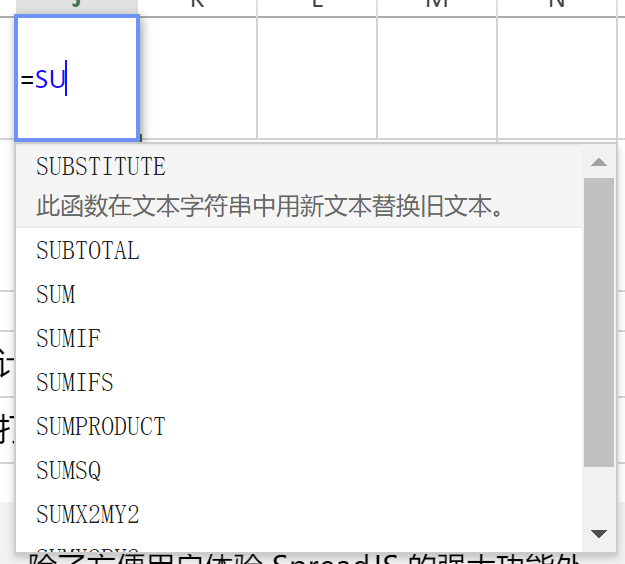
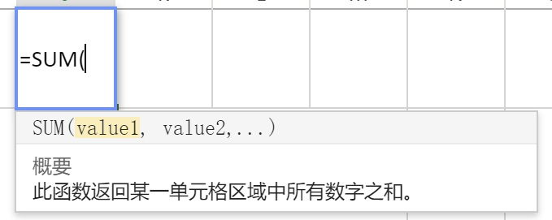

上周接到一个重要客户的个性化定制需求，要重写SpreadJS的公式提示信息面板。这个可以理解，打造自己的产品嘛，总是希望能加一些个性化的设计。
Origin: https://gcdn.grapecity.com.cn/showtopic-85303-1-1.html
需求背景描述：
上周接到一个重要客户的个性化定制需求，要重写SpreadJS的公式提示信息面板。客户是做在线协同文档产品的（对协同的话题感兴趣的话可以查看“协同文档”标签下的文章）。这个可以理解，打造自己的产品嘛，总是希望能加一些个性化的设计。但麻烦点在于，SpreadJS没有提供对应的public接口，所以通常会给客户建议直接购买SpreadJS的源代码，这样大家都愉快。
购买源码涉及到采购立项、商务谈判（搞不好还要招投标）、合同审核、付款等流程，这一套下来对方产品团队估计就疯了。这边经过讨论（尤其是要征得销售同学的同意，你猜猜为什么;) ），仅就此功能给客户出一个临时解决方案。
以上为背景。
需求/功能描述：


如上图所示，以上两个提示信息是SpreadJS原生实现的，体验上类似Excel的Formula Helper的tip，客户就想自己做一个个性化的tip替换掉原生效果。
那么要实现自定制Formula Helper Tips，到底要实现什么？这里建议有此想法的小伙伴，可以先打开一个SpreadJS，输入公式后仔细查看Tips的UI逻辑。我总结了几点，如下所示：
1、能够在光标处根据当前输入内容，自动模糊检索可能的公式条目；
2、当输入公式参数时，会自动判断参数输入的是公式，还是值（或引用），如果是公式，回到1，如果是值（或引用），弹出参数提示以及公式详情；
3、当遇到多层嵌套公式时，Helper Tip会随鼠标点击（光标停留）的位置判断所在位置的公式，并结合1、2的逻辑给出对应的提示信息。
以上3点，是基于UI层面的逻辑拆解，看起来不复杂，但进一步拆解为技术点时会发现，里面有很多难点，比如：
1、怎么获得输入框的光标位置？
2、当光标更改时，如何拆解出对应的公式，并修改Tip的内容给出对应的提示？
3、怎么判断输入、点击、光标变更的事件，如何在合适的时机弹出Helper Tips？
这几个问题都是大坑，我会把这个话题分三个部分，把这些问题一一处理掉。
第一步：解决问题3 —— 如何在合适的时机弹出Helper Tips?
这个问题，如果正面强攻，会非常麻烦，不过好在我们只需要“重写”SpreadJS现有的内容，而不需要自己再造一套轮子。因此我们可以通过MutationObserver监听SpreadJS的弹窗，再修改原有的内容为自定义内容即可。
注：MutationObserver监听是异步的，但它是微任务，优先级高于Dom渲染，不用担心会出现原界面“闪现”的问题。
代码如下：
1
2
3
4
5
6
7
8
9
10
11
12
13
14
15
16
17
18
19
20
21
22
23
24
25
26
27
28
29
30
31
32
33
|
function observeChange(formulaHelper){
const targetNode = document.getElementById('ss');
const config = { childList: true };
const callback = function(mutationsList, observer) {
for(let mutation of mutationsList) {
if (mutation.type === 'childList') {
if(mutation.addedNodes && mutation.addedNodes.length > 0){
let addedNodes = mutation.addedNodes;
for(let i=0; i<addedNodes.length; i++){
let node = addedNodes[i];
if(node.classList[0] === "gcsj-func-help-popup" || node.classList[0] === "gcsj-func-ac-popup" ){
const nodeObserver = new MutationObserver((mutationsList, observer) => {
mutationsList.forEach((mutationRecord) => {
nodeObserver.disconnect();
mutationRecord.target.innerText = formulaHelper.showForCasual(node);
nodeObserver.observe(node, {attributes: true, childList: true});
});
});
nodeObserver.observe(node, {attributes: true, childList: true})
}
}
}
}
}
};
const observer = new MutationObserver(callback);
observer.observe(targetNode, config);
return observer;
}
|
第二步：解决问题1 —— 如何获取光标位置？
可能有同学之前在网上搜索过这个问题，但题主确实是没有找到原生的JS事件能够直接监听光标位置的改变。所以这里采用了一些特殊的办法：通过获取“选中区域”的方式，获取到光标所在位置，如果选中区域为0，光标位置就是 selection 的 start == end的位置。
1
2
3
4
5
6
7
8
9
10
11
12
13
14
15
16
17
18
19
20
21
22
23
24
25
26
27
28
|
static getCursortPosition(element) {
var caretOffset = 0;
var doc = element.ownerDocument || element.document;
var win = doc.defaultView || doc.parentWindow;
var sel;
if (typeof win.getSelection != "undefined") {
sel = win.getSelection();
if (sel.rangeCount > 0) {
var range = win.getSelection().getRangeAt(0);
var preCaretRange = range.cloneRange();
preCaretRange.selectNodeContents(element);
preCaretRange.setEnd(range.endContainer, range.endOffset);
caretOffset = preCaretRange.toString().length;
}
} else if ((sel = doc.selection) && sel.type != "Control") {
var textRange = sel.createRange();
var preCaretTextRange = doc.body.createTextRange();
preCaretTextRange.moveToElementText(element);
preCaretTextRange.setEndPoint("EndToEnd", textRange);
caretOffset = preCaretTextRange.text.length;
}
return caretOffset;
}
|
那么有了上述的方法，我们已经可以获取到输入框的光标位置了，但是在什么时机获取呢？结合Part I 中的分析，当以下两种情况出现时，我们需要更新光标位置：
1、输入框内容发生改变时；
2、鼠标点击对应位置时；
3、键盘的 上、下、左、右方向键被触发时。
本Demo实现其中两个（键盘事件参考鼠标事件自行绑定）
代码如下：
1
2
3
4
5
6
7
8
9
10
11
12
13
14
15
16
17
18
19
20
21
22
23
24
|
sheet.bind(GC.Spread.Sheets.Events.EditStarting, (sender, args) => {
const editHost = CustomizeFormulaHelper.getInputDom(args.sheet);
if(editHost){
editHost.addEventListener("click", () => {
myFormulaHelper.currentCursortPosition = CustomizeFormulaHelper.getCursortPosition(editHost);
});
}
});
sheet.bind(GC.Spread.Sheets.Events.EditChange, (sender, args) => {
const editHost = CustomizeFormulaHelper.getInputDom(args.sheet);
if(editHost){
myFormulaHelper.currentCursortPosition = CustomizeFormulaHelper.getCursortPosition(editHost);
}
});
sheet.bind(GC.Spread.Sheets.Events.EditEnded, (sender, args) => {
myFormulaHelper = new CustomizeFormulaHelper(args.sheet, fbx);
observer.disconnect();
observer = observeChange(myFormulaHelper);
});
|
第三步：解决问题2 —— 如何解析公式（尤其是多层嵌套公式），并给出具体的提示信息？
通过前两篇的铺垫，我们打通了光标事件、展示时机两大难点。本篇来解决最麻烦的解析公式问题。
我在第一篇中提到，公式提示信息分两种：
1、公式补全，也就是当用户输入不完整公式时，提示信息应当是一个列表，我们在列表中会罗列出系统中支持的所有公式的模糊检索结果以及公式的描述信息。
2、公式参数提醒，当用户输入了完整的公式后，进入参数填写时，我们要提示客户参数的个数和形式。
针对最复杂的解析公式问题，好在SpreadJS的FormulaTextBox暴露了一个parseInternal方法可供我们调用，调用方式：
1
| fbx.parseInternal(fbx.text(), sheet, sheet.getActiveRowIndex(), sheet.getActiveColumnIndex())
|
这就是为何我们要在Demo中绑定一个隐藏的FormulaTextBox供我们使用的原因。
另外，针对公式和描述信息、以及参数信息，我们可以调用
1
| GC.Spread.CalcEngine.Functions.findGlobalFunctions();
|
来获取全局公式的定义，并通过
获取到每个function的描述信息（包括了参数信息）
综上，我们已经打通了所有需要依赖的接口，剩下的就是纯JS编码了，具体参考附件Demo的实现吧。
完整Demo参考：
custome_formula_helper.zip